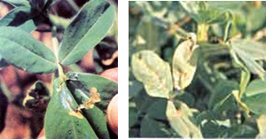
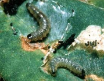

| Home |
| GROUNDNUT |
| 1. Aphids |
| 2. laef hopper |
| 3. thrips |
| 4. red hairy caterpiller |
| 5. leaf miner |
| 6. tobacco caterpiller |
| 7. gram pod borer |
| 8. pod borer (Ear Wig) |
| 9. pod bug |
| 10. Bud borer |
| 11. stem borer |
| 12. termites |
| 13. white grub |
| Questions |
| Download Notes |
PESTS OF GROUNDNUT :: Major Pests :: Leaf Miner
5. Leaf miner: Aproaeroma modicella (Gelechiidae: Lepidoptera)
Distribution and status: India, Pakistan, Sri Lanka, Burma and South Africa.
Host range: Groundnut, soybean and redgram.
Damage symptoms: It prefers rainfed crop and bunch varieties. Young newly hatched green caterpillar mines into the leaflets and feed on green tissues resulting in brownish dried up patches. Later instars caterpillars fold the leaves together and feed on the green tissues by remaining inside. Severely infested crop presents a burnt up appearance. Caterpillars (or) pupae can be seen inside the mines and folded leaflets. It also attacks red gram and soybean.
 |
Bionomics: Adult is dark brown with a white spot on the coastal margin of each forewing. The small hind wings are covered by fringe of minute hair. Adults are found briskly whirling around the plants in field and lay shiny transparent eggs singly on the under surface of leaflets. A female moth lays 150-200 eggs that hatch in 2-3 days. The larvae are pale brown. Fully grown larva measures 6-8 mm. The larval period is 4-17 days. They pupate in white silken cocoons within webbed leaflets and the pupae are reddish brown. The pupal period is 5-7 days. Adult longevity is 5-6 days. Life cycle is completed in 20-25 days. They cause severe damage from September to November to the rainfed crop and during March & April to irrigated crop.
 |
ETL: 1 larva per meter row or five or more active larvae per plant are found up to 30 days after seedling emergence (DAE), 10 larvae per plant at 50 DAE and 15 larvae per plant at 75 DAE or later.
Management
- Grow resistant cultivars like ICGV 86031, ICGS 156 (M 13), FDRS 10, ICG 57, 156, 541, 7016, 7404, 9883
- Sow groundnut early and synchronously in rainy and rabi season.
- Intercrop groundnut with pearl millet @ 4:1 ratio.
- Set up light traps between 8 and 11 PM at ground level.
- Mulch the soil with straw within 10 days after germination wherever possible.
- Avoid water stress in irrigated crop to avoid the pest infestation.
- Maintain the fields and bunds free from weeds.
- Apply either endosulfan 4D or carbaryl 10 D at 25 kg/ha when the pest crosses ETL.
- Spray any one of the following insecticides - endosulfan 35 EC 750 ml/ha, dichlorovos 76 SC 625 ml/ha, quinolphos 25 EC 750 ml/ha, lambda cyhalothrin 5 EC 200-300 ml in 375 L of water,